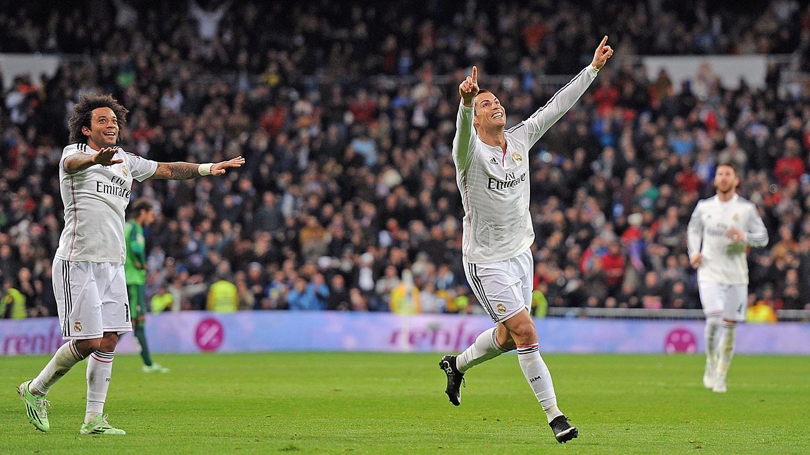

Nickname 'Penaldo' — A Chronology of Dives
United's 'diving prince': The freshly-arrived Ronaldo at Old Trafford was known for flashy footwork and exaggerated falls. Between 2003 and 2006 the ratio of times he was tackled versus actually went down was badly skewed; the 'Diving Ronaldo' reputation spread, and even home fans would occasionally jeer.
Ferguson's awkward defence: In 2008, pressed by the media over Ronaldo's diving, Sir Alex Ferguson blurted out 'he doesn't dive any more' — a line meant to defend his player that instead confirmed he used to dive. It became a footballing classic Freudian slip, mercilessly repeated by meme-makers to this day.
The 2006 World Cup 'wink-gate': In the England-Portugal quarter-final, Rooney was sent off for stamping on Carvalho. Ronaldo pressured the referee then slyly winked at the Portuguese bench, captured perfectly by cameras. The 'mission accomplished' signal made all of England view him as a scheming villain, and on returning to United he was jeered for months.
World Cup diving controversies: At the 2018 World Cup against Iran, Ronaldo went down theatrically after minimal box contact and was booked; at the 2022 World Cup he claimed a 'hair-touch' goal that FIFA later reattributed to B. Fernandes — the exaggeration of the head contact was staggering.
La Liga years continued: At Real Madrid Ronaldo was repeatedly mocked by the Spanish press for theatrical falls in the box. In one El Clásico, against Piqué's lightest body contact he rolled as if struck by lightning; slow motion showed almost no contact — adding another entry to his 'Oscar-winner' résumé.
The Saudi-era 'old hand': Approaching 40 in Saudi, Ronaldo's diving did not let up. In a 2023 league match his diving header-style fall in the box was caught by VAR; the referee showed a yellow without hesitation and the veteran's professionalism was collectively mocked by local media.
The diving legacy: From the Premier League to the World Cup, from La Liga to Saudi Arabia, over twenty years Ronaldo turned 'diving' into an art. His exaggerated rolls and face-clutching have become an iconic symbol of football's dark side, more deeply etched in memory than any goal compilation.